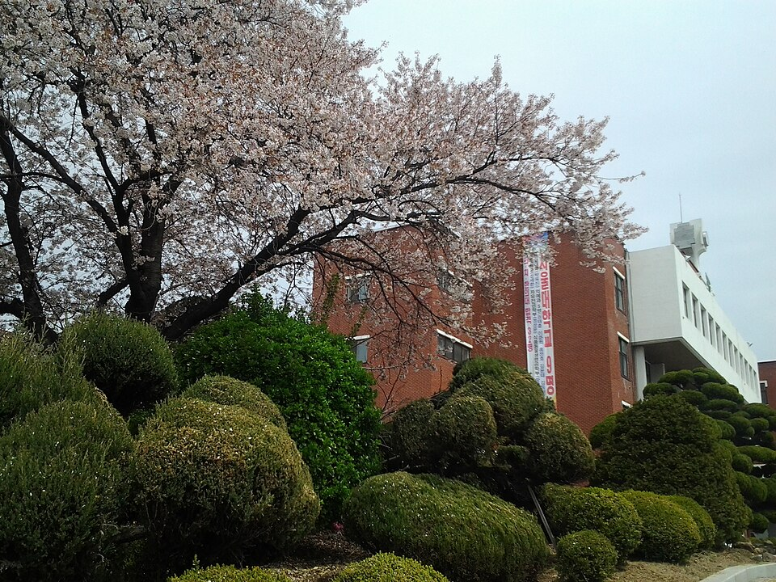

수성구는 대구에서 학군이 가장 센 지역입니다. 범어·만촌 쪽 경북고·경신고·대륜고·능인고, 그리고 정화여고·대구여고까지 한 구 안에 40곳이 몰려 있습니다. 학원가도 범어동에 크게 형성돼 있지만, 그만큼 학원 진도에 못 따라가는 학생도 함께 생깁니다. 수성구에서 수학과외·영어과외를 찾는 이유가 대개 여기 있습니다.
오늘은 수성구에 직접 찾아가는 선생님 중 두 분을 소개합니다. 한 분은 문·이과 심화까지 보는 수학 선생님, 한 분은 중하위권 내신을 잡아 주는 영어 선생님입니다.
수학과를 나와 중등부터 고3까지, 문과·이과·심화를 모두 보는 선생님입니다. 수성구처럼 상위권 경쟁이 촘촘한 지역에서 심화까지 이어서 봐 줄 수 있는 건 큰 장점입니다.
수업은 틀리는 이유를 찾아 득점으로 바꾸는 방식입니다. 개념부터 실전까지 단계를 밟되, 출제 의도를 읽는 훈련으로 실수를 줄여 갑니다. 학습 경험이 많지 않은 학생에게는 자기주도 학습력을 키워 주고, 슬럼프에 빠진 학생은 원인부터 찾아 해결하는 쪽입니다. 시지·사월·신매동 학생이 집에서 받기 좋은 동선입니다.
박ㅇ 선생님 상세 프로필 →수성구 영어과외에서 중하위권 학생을 반기는 선생님은 의외로 찾기 어렵습니다. 이 선생님은 중·하위권 수업을 환영한다고 명시하고, 중·고등 내신 시험 대비에 특히 강점이 있습니다.
독어독문학 전공에 영문학 부전공, 번역 경험까지 있어 언어 자체에 대한 이해를 바탕으로 가르칩니다. 문법을 규칙으로만 외우게 하지 않고 왜 그런지를 설명하는 쪽이라, 영어에서 한 번 무너진 학생이 다시 잡기 좋습니다. 학습 코칭 자격을 갖춰 진로·진학 상담도 함께 됩니다. 범어·황금동 학생은 방문, 그 외 지역은 화상으로 가능합니다.
신ㅇ용 선생님 상세 프로필 →학교마다 시험 출제 경향과 수행평가 비중이 달라서, 학교별로 준비법을 따로 정리해 두었습니다.
👉 수성구 수학과외 선생님 · 수성구 영어과외 선생님 · 관리 학교 40곳 전체 보기
학년과 과목, 원하는 시간대만 알려주시면 24시간 안에 맞는 선생님을 추천해 드립니다.